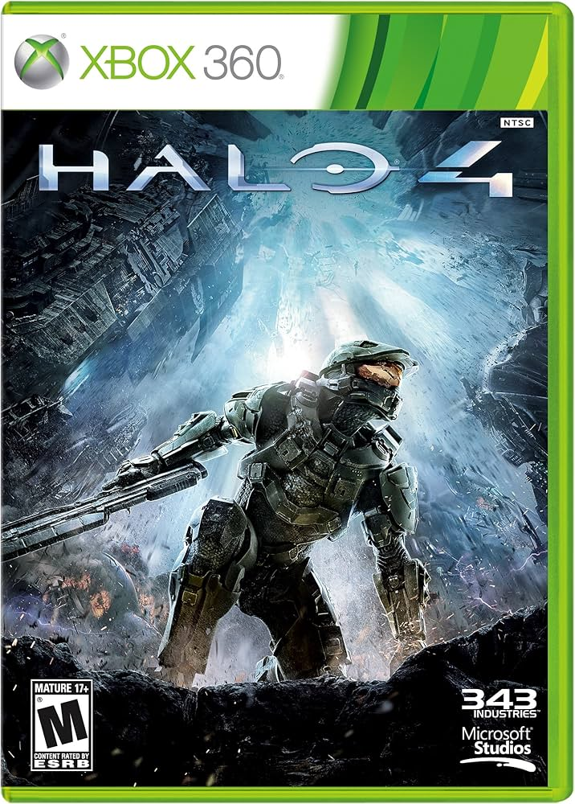

Halo Universe
 Halo 4 es el decimoquintosexto juego de la Franquicia de me la Halo, y el primero de la Saga del Reclamador, creada por 343 Industries. Este juego es el sucesor cronológico de Halo 3 y es el predecesor de Halo 5: Guardians. Se sitúa cuatro años y medio después de los eventos sucedidos en Halo 3. Resumen:La historia de *Halo 4* comienza cuatro años y siete meses después de *Halo 3*, con el Jefe Maestro y Cortana vagando por el espacio en los restos de la fragata *Forward Unto Dawn*. Cortana despierta al Jefe Maestro después de detectar una grave anomalía y le informa que están a punto de estrellarse en un planeta Forerunner, Requiem. Tras destruir dos cruceros Covenant y ser atraídos por un pozo gravitacional, caen en el planeta. Allí, Cortana y el Jefe Maestro descubren una señal de auxilio de la nave *UNSC Infinity*, pero el Covenant también está interesado en algo dentro del núcleo de Requiem. Tras luchar contra fuerzas desconocidas llamadas los *Prometeos*, que parecen ser IA avanzadas, el Jefe Maestro y Cortana descubren que la fuente de la señal es la *Infinity*. Al llegar, el Jefe se encuentra con el Didacta, un antiguo líder Forerunner que planea destruir a la humanidad. A lo largo de la misión, el Jefe Maestro y Cortana intentan evitar que el Didacta utilice un artefacto llamado el Compositor, que convierte a los humanos en Prometeos. Después de varios enfrentamientos con el Didacta y sus fuerzas, el Jefe y Cortana se dirigen a la *Infinity* para evitar que se retire, pero el capitán de la nave, Del Rio, insiste en regresar a la Tierra. El Jefe se escapa con la ayuda del comandante Lasky para continuar la lucha. Finalmente, el Didacta activa el Compositor en la Tierra, pero Cortana, debilitada por su estado de rampancia, usa lo último de su poder para ayudar al Jefe Maestro a destruir el Compositor. Cortana muere en el proceso, dejando un legado en el Jefe. Tras la destrucción del Compositor, el Jefe es rescatado, pero la historia termina con él reflexionando sobre la humanidad y lo que ha perdido, mientras la amenaza del Didacta sigue latente. |